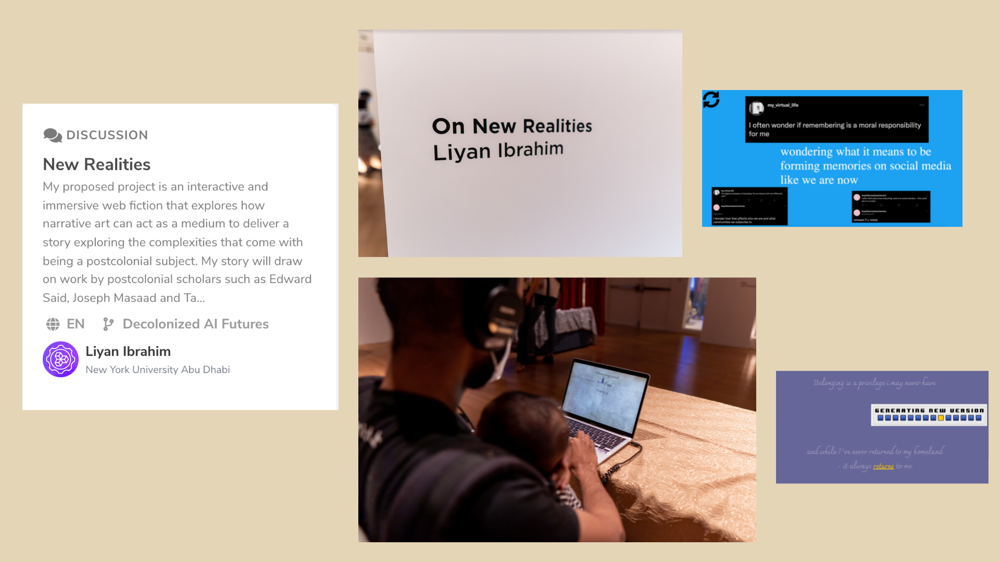

Postcolonial Identities · Digital Storytelling

On New Realities is an interactive storytelling project that explores the complexities of being a postcolonial subject in the digital age. Supervised by Professor Heather Dewey-Hagborg, this independent capstone project was presented at the Mozilla Festival 2022 in the Decolonizing AI space and exhibited at the NYU Abu Dhabi Capstone Showcase.
Users navigate an interactive web fiction where they engage in a house hunt, uncovering objects embedded with historical and conceptual narratives of postcolonial identity. The experience intertwines history, digital culture, and fiction to create an immersive reflection on what it means to exist in a postcolonial reality.